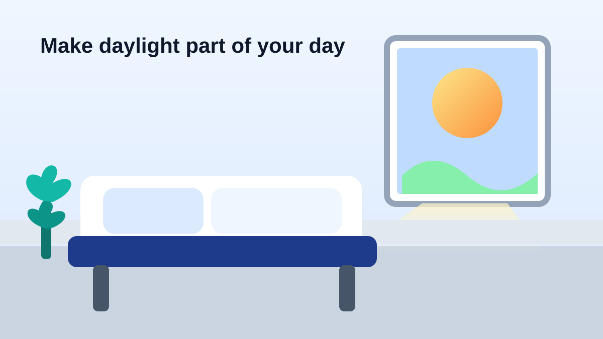

Morning Light and Better Sleep: A Practical Guide
A small shift in your daylight and evening routine may help reinforce your body's sleep-wake rhythm.
By Healthume Editorial Team · November 17, 2026 · 5 min read

Try waking at a regular time, getting outside for daylight early in your day, and dimming bright light before bed. These habits can support a consistent sleep-wake schedule, but they are not a treatment for every sleep problem.
Sleep timing is shaped by more than the time you get into bed. Light is one of the signals your internal body clock uses to help distinguish daytime from nighttime. Getting natural light earlier in the day and keeping evenings calmer can be useful parts of a healthy routine.
Why daytime light matters
Your circadian rhythm helps coordinate daily patterns such as alertness and sleepiness. Daylight gives the body a strong environmental cue. The CDC recommends getting natural light, especially earlier in the day, as one step that can support healthy sleep habits.
You do not need special equipment for an ordinary routine: a short outdoor walk, breakfast near a bright window, or time outside during a lunch break can make daylight part of your day. Outdoor light is usually brighter than typical indoor lighting, even when the sky is overcast.
Build a simple routine
- Choose a steady wake time. Keep it reasonably consistent across the week, including weekends, so your schedule has a dependable anchor.
- Get some daylight early. Spend time outdoors after waking when practical. A walk can combine light exposure with daytime movement.
- Make evenings lower-key. In the hour or two before bed, reduce bright light if it feels helpful. Keep screens and room lighting from turning your wind-down period into a bright, active one.
- Protect enough time for sleep. Most adults need at least seven hours. A consistent routine cannot make up for regularly allowing too little time in bed.
What about coffee and naps?
Caffeine can interfere with sleep for some people, and its effects may last for hours. If you have trouble falling asleep, try moving caffeine earlier and notice whether that changes your sleep. If you nap, shorter naps earlier in the day are less likely to affect nighttime sleep for many people.
Keep expectations realistic
Sleep needs and schedules vary. Morning light is a helpful cue, not a guaranteed fix or a substitute for medical care. Shift work, travel, medicines, pain, stress, and sleep disorders can all affect sleep. People with significant eye conditions or medicines that increase light sensitivity should ask a clinician before trying a bright-light device.
If sleep problems persist, affect your daytime functioning, or include loud snoring, gasping, or pauses in breathing, talk with a healthcare professional. A clinician can help look for causes and discuss appropriate treatment.
A one-week experiment
For a week, choose a wake time you can maintain, add a brief outdoor daylight break early in your day, and jot down when you go to bed and how rested you feel. Look for patterns rather than expecting every night to be perfect. Keep changes manageable enough to repeat.
Sources
- CDC: About Sleep and Your Heart Health
- National Heart, Lung, and Blood Institute: Healthy Sleep Habits
- CDC: About Sleep
Health note: This article is for general education and does not diagnose or treat a condition. Individual health needs vary; consult a qualified healthcare professional about personal concerns.